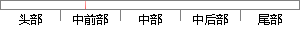

关联购买：用户在使用联通移动服务过程中是否还同时办理其他业务（主要是固定电话和宽带业务），1=同时办理一项其他业务，2=同时办理两项其他业务，0=没有办理其他业务；
片段位置图

相似结果|
1
原句片段：关联购买：用户在使用联通移动服务过程中是否还同时办理其他业务（主要是固定电话和宽带
相似片段 1：服务合约:用户是否与联通签订过服务合约,1=是,0=否 关联购买:用户在使用联通移动服务过程中是否还同时办理其他业务(主要是固定电话和宽带业务),1=同时...
2
原句片段：业务），1=同时办理一项其他业务，2=同时办理两项其他业务，0=没有办理其他业务；
相似片段 1：在使用联通移动服务过程中是否还同时办理其他业务(主要是固定电话和宽带业务),1=同时办理一项其他业务,2=同时办理两项其他业务,0=没有办理其他业务...
相似片段 2：您已办理的其他业务有:1、彩铃(属套餐必选业务、不能退订);2、CMWAP业务; 尊敬的客户,您好!您已办理的其他业务有:1、彩铃(属套餐必选业务、不能退订);2、...
相似片段 3：一个月发300多条短信,办理什么业务最省钱(湖南地区) 比如短信套餐什么的, 请告诉...评论 0 0 其他2条回答 为您推荐:其他类似问题2009-05-22 办什么业务发短...
相似片段 4：联通199元套餐如果办理两个副卡的话,那么一个月三个手机的消费在不办理其他业务...有6元的功能费,两张副卡就是12元,如果在不办理和消费其他业务的情况下应该是...
相似片段 5：银行有没有两个人开一个户的业务密码两个人设置一个一人保管三位。办理其它业务必须两人同时在场才行 匿名 发布于2015-10-10 16:59 最佳答案 你好,银行也是有...
|
※ 片段修改建议 ※
近似词参考：- 关联：联系关系
- 购买：采办 购置
- 使用：利用
- 移动：挪动
- 服务：办事
- 过程中：过程当中
- 是否：是不是
- 办理：打点 管理 解决
- 业务：营业
- 主要：首要 重要
- 要是：如果
- 固定：牢固
- 电话：德律风
- 业务：营业
- 办理：打点 管理 解决
- 业务：营业
- 办理：打点 管理 解决
- 业务：营业
- 办理：打点 管理 解决
- 业务：营业
系统自动生成语句：联系关系采办：用户在利用联通挪动办事过程当中是不是还同时打点其他营业（首要是牢固德律风和宽带营业），1=同时打点一项其他营业，2=同时打点两项其他营业，0=没有打点其他营业；
注：本片段修改建议为系统自动生成，仅供参考。